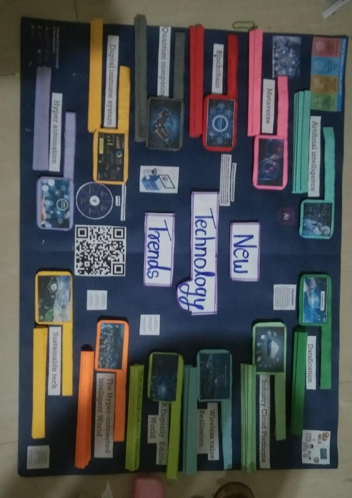

Artificial Intelligence

Artificial Intelligence (AI) is the simulation of human intelligence processes by machines, especially computer systems. These processes include learning (the acquisition of information and rules for using the information), reasoning (using rules to reach approximate or definite conclusions), and self-correction. AI has the potential to revolutionize industries and augment human capabilities, from predictive analytics and natural language processing to autonomous vehicles and robotics.
In the future, AI will continue to advance rapidly, enabling machines to perform tasks that were once thought to require human intelligence. AI-powered systems will enhance productivity, streamline operations, and unlock new opportunities for innovation across various sectors. From personalized healthcare and education to smart cities and sustainable development, AI will play a crucial role in addressing complex challenges and improving quality of life.
However, along with its tremendous potential, AI also raises ethical and societal concerns, including job displacement, privacy issues, and algorithmic biases. As AI technologies become more pervasive, it's essential to prioritize transparency, accountability, and ethical considerations in their development and deployment.
Overall, Artificial Intelligence represents a transformative force that will shape the future of humanity, empowering us to achieve new heights of knowledge, creativity, and progress.
Artificial Intelligence (AI) refers to the development of computer systems that can perform tasks requiring human intelligence, such as problem-solving, pattern recognition, and decision-making Artificial Intelligence (AI) is like teaching com puters to think and make decisions similar to humans. It involves creating smart machines that can learn from experiences, analyze information, and solve problems, enabling them to perform tasks that normally require human intelligence. virtual personal assistants like Siri, Google Assistant, or Alexa etc. Alan Turing was the first person to carry out substantial research in the field that he called Machine Intelligence.[1] The field of AI research was founded at a workshop held on the campus of Dartmouth College, USA during the summer of 1956.[2] Those who attended would become the leaders of AI research for decades. Many of them predicted that a machine as intelligent as a human being would exist in no more than a generation, and they were given millions of dollars to make this vision come true.[3] Eventually, it became obvious that researchers had grossly underestimated the difficulty of the project.[4] In 1974, in response to the criticism from James Lighthill and ongoing pressure from congress, the U.S. and British Governments stopped funding undirected research into artificial intelligence, and the difficult years that followed would later be known as an "AI winter". Seven years later, a visionary initiative by the Japanese Government inspired governments and industry to provide AI with billions of dollars, but by the late 1980s the investors became disillusioned and withdrew funding again. Investment and interest in AI boomed in the 2020s when machine learning was successfully applied to many problems in academia and industry due to new methods, the application of powerful computer hardware, and the collection of immense data sets.
Metaverse

The Metaverse is a collective virtual shared space, created by the convergence of virtually enhanced physical reality and physically persistent virtual reality. It's a fully immersive digital realm where individuals can live, work, and socialize in virtual environments. The Metaverse offers endless possibilities for entertainment, education, collaboration, and commerce, blurring the lines between physical and virtual worlds.
In the future, the Metaverse will become an integral part of everyday life, revolutionizing how we interact with information, entertainment, and each other. Virtual reality (VR) and augmented reality (AR) technologies will enable seamless integration between physical and virtual experiences, creating immersive narratives and interactive environments.
From virtual meetings and conferences to virtual shopping and gaming, the Metaverse will redefine social interactions, entertainment, and commerce. It will provide new avenues for creativity, expression, and exploration, transcending geographical barriers and cultural boundaries.
However, the widespread adoption of the Metaverse also raises concerns about privacy, security, and digital identity. As individuals immerse themselves in virtual environments, it's crucial to address these challenges and ensure a safe and inclusive digital space for all.
In conclusion, the Metaverse represents a paradigm shift in how we perceive and interact with the digital world. By embracing its potential while addressing its challenges, we can harness the transformative power of the Metaverse to create a more connected, immersive, and inclusive future.
The metaverse is a loosely defined term referring to virtual worlds in which users represented by avatars interact,usually in 3D and usually focused on social and economic connection. The term metaverse originated in the 1992 science fiction novel Snow Crash as a portmanteau of "meta" and "universe". In Snow Crash, the metaverse is envisioned as a hypothetical iteration of the Internet as a single, universal, and immersive virtual world that is facilitated by the use of virtual reality (VR) and augmented reality (AR) headsets. The term "metaverse" is often linked to virtual reality technology,and Web3 and blockchain technology. The term has been used as a buzzword by companies to exaggerate the development progress of various related technologies and projects for public relations purposes. Information privacy, user addiction, and user safety are concerns within the metaverse, stemming from challenges facing the social media and video game industries as a whole.
Blockchain

Blockchain is a decentralized, distributed ledger technology that records transactions across multiple computers in such a way that the registered transactions cannot be altered retroactively. It provides trust, transparency, and security in various industries, including finance, supply chain management, healthcare, and more.
In the future, blockchain technology will continue to disrupt traditional business models and processes, enabling new forms of digital ownership, decentralized governance, and peer-to-peer transactions. Smart contracts, decentralized finance (DeFi), and non-fungible tokens (NFTs) are just a few examples of innovative applications built on blockchain.
By eliminating the need for intermediaries and enabling direct peer-to-peer interactions, blockchain reduces costs, streamlines processes, and enhances security. It has the potential to democratize access to financial services, empower individuals, and drive financial inclusion worldwide.
However, challenges such as scalability, interoperability, and regulatory compliance remain hurdles to widespread blockchain adoption. Overcoming these challenges will require collaboration between industry stakeholders, governments, and regulatory bodies to establish standards and best practices.
In summary, blockchain technology holds the promise of creating a more transparent, efficient, and inclusive digital economy. As we continue to explore its potential and address its challenges, blockchain will shape the future of finance, commerce, and governance.
blockchain is a distributed ledger with growing lists of records (blocks) that are securely linked together via cryptographic hashes.Each block contains a cryptographic hash of the previous block, a timestamp, and transaction data (generally represented as a Merkle tree, where data nodes are represented by leaves). Since each block contains information about the previous block, they effectively form a chain (compare linked list data structure), with each additional block linking to the ones before it. Consequently, blockchain transactions are irreversible in that, once they are recorded, the data in any given block cannot be altered retroactively without altering all subsequent blocks. Blockchains are typically managed by a peer-to-peer (P2P) computer network for use as a public distributed ledger, where nodes collectively adhere to a consensus algorithm protocol to add and validate new transaction blocks. Although blockchain records are not unalterable, since blockchain forks are possible, blockchains may be considered secure by design and exemplify a distributed computing system with high Byzantine fault tolerance. A blockchain was created by a person (or group of people) using the name (or pseudonym) Satoshi Nakamoto in 2008 to serve as the public distributed ledger for bitcoin cryptocurrency transactions, based on previous work by Stuart Haber, W. Scott Stornetta, and Dave Bayer.The implementation of the blockchain within bitcoin made it the first digital currency to solve the double-spending problem without the need for a trusted authority or central server. The bitcoin design has inspired other applications and blockchains that are readable by the public and are widely used by cryptocurrencies. The blockchain may be considered a type of payment rail. Private blockchains have been proposed for business use. Computerworld called the marketing of such privatized blockchains without a proper security model "snake oil" however, others have argued that permissioned blockchains, if carefully designed, may be more decentralized and therefore more secure in practice than permissionless ones
Quantum Computing

Quantum computing utilizes the principles of quantum mechanics to perform computations. Unlike classical computers, which use bits as binary units of information (0 or 1), quantum computers use quantum bits or qubits, which can represent and process information in multiple states simultaneously.
In the future, quantum computing has the potential to solve complex problems exponentially faster than classical computers, revolutionizing fields such as cryptography, drug discovery, optimization, and more. Quantum computers can tackle problems that are currently intractable for classical computers due to their ability to explore multiple solutions simultaneously.
Quantum computing promises breakthroughs in areas such as cryptography, where it can break existing encryption methods and pave the way for quantum-safe cryptography. It also offers significant advancements in drug discovery, material science, and optimization problems, enabling faster and more efficient solutions to real-world challenges.
However, quantum computing is still in its early stages, facing challenges such as qubit coherence, error correction, and scalability. Researchers and engineers are actively working to overcome these challenges and develop practical quantum computing systems.
In conclusion, quantum computing represents a paradigm shift in computational power and problem-solving capabilities. As research and development in quantum computing continue to progress, we can expect to see transformative applications that reshape industries and address some of the most pressing challenges of our time.
A quantum computer is a computer that takes advantage of quantum mechanical phenomena. At small scales, physical matter exhibits properties of both particles and waves, and quantum computing leverages this behavior, specifically quantum superposition and entanglement, using specialized hardware that supports the preparation and manipulation of quantum states. Classical physics cannot explain the operation of these quantum devices, and a scalable quantum computer could perform some calculations exponentially faster (with respect to input size scaling)[2] than any modern "classical" computer. In particular, a large-scale quantum computer could break widely used encryption schemes and aid physicists in performing physical simulations; however, the current state of the art is largely experimental and impractical, with several obstacles to useful applications. Moreover, scalable quantum computers do not hold promise for many practical tasks, and for many important tasks quantum speedups are proven impossible. The basic unit of information in quantum computing is the qubit, similar to the bit in traditional digital electronics. Unlike a classical bit, a qubit can exist in a superposition of its two "basis" states. When measuring a qubit, the result is a probabilistic output of a classical bit, therefore making quantum computers nondeterministic in general. If a quantum computer manipulates the qubit in a particular way, wave interference effects can amplify the desired measurement results. The design of quantum algorithms involves creating procedures that allow a quantum computer to perform calculations efficiently and quickly. Physically engineering high-quality qubits has proven challenging. If a physical qubit is not sufficiently isolated from its environment, it suffers from quantum decoherence, introducing noise into calculations. Paradoxically, perfectly isolating qubits is also undesirable because quantum computations typically need to initialize qubits, perform controlled qubit interactions, and measure the resulting quantum states. Each of those operations introduces errors and suffers from noise, and such inaccuracies accumulate. National governments have invested heavily in experimental research that aims to develop scalable qubits with longer coherence times and lower error rates. Two of the most promising technologies are superconductors (which isolate an electrical current by eliminating electrical resistance) and ion traps (which confine a single ion using electromagnetic fields). In principle, a non-quantum (classical) computer can solve the same computational problems as a quantum computer, given enough time. Quantum advantage comes in the form of time complexity rather than computability, and quantum complexity theory shows that some quantum algorithms for carefully selected tasks require exponentially fewer computational steps than the best known non-quantum algorithms. Such tasks can in theory be solved on a large-scale quantum computer whereas classical computers would not finish computations in any reasonable amount of time. However, quantum speedup is not universal or even typical across computational tasks, since basic tasks such as sorting are proven to not allow any asymptotic quantum speedup. Claims of quantum supremacy have drawn significant attention to the discipline, but are demonstrated on contrived tasks, while near-term practical use cases remain limited. Optimism about quantum computing is fueled by a broad range of new theoretical hardware possibilities facilitated by quantum physics, but the improving understanding of quantum computing limitations counterbalances this optimism. In particular, quantum speedups have been traditionally estimated for noiseless quantum computers, whereas the impact of noise and the use of quantum error-correction can undermine low-polynomial speedups.
Digital Immune System

A Digital Immune System is an advanced cybersecurity solution that autonomously detects, analyzes, and neutralizes cyber threats in real-time. It safeguards interconnected networks and digital infrastructure, ensuring resilience against evolving cyber threats.
In the future, digital immune systems will play a crucial role in protecting individuals, organizations, and critical infrastructure from cyber attacks, data breaches, and other cybersecurity threats. By leveraging artificial intelligence, machine learning, and predictive analytics, digital immune systems can detect and respond to threats proactively, minimizing the impact of cyber attacks.
As cyber threats become more sophisticated and pervasive, digital immune systems will continue to evolve, incorporating new technologies and techniques to stay ahead of emerging threats. They will enhance cybersecurity posture, strengthen defense capabilities, and enable organizations to adapt to the evolving threat landscape.
However, the effectiveness of digital immune systems depends on collaboration, information sharing, and coordination among stakeholders. By fostering partnerships between government agencies, private sector organizations, and cybersecurity experts, we can build a robust ecosystem of defense against cyber threats.
In summary, digital immune systems represent a critical component of cybersecurity strategy in the digital age. By investing in advanced technologies and fostering collaboration, we can build resilient defenses that protect our digital assets and safeguard the integrity of our interconnected world.
In 1999, leading American software company, Symantec Corporation launched the Digital Immune System, a strategy for providing corporate customers with intelligent tools that keep systems running at peak performance A digitally immune system is like a guardian for your computer or devices. It works to defend against harmful digital threats, such as viruses and cyberattacks, keeping your digital world safe.
Hyper Automation

Hyper Automation refers to the use of advanced technologies like artificial intelligence (AI), machine learning (ML), and robotic process automation (RPA) to automate processes beyond routine tasks. It streamlines business operations, enhances productivity, and drives innovation.
In the future, hyper automation will transform industries by automating complex workflows, decision-making processes, and strategic initiatives. By combining AI, ML, and RPA capabilities, organizations can automate end-to-end processes, from customer service and supply chain management to financial analysis and decision-making.
Hyper automation enables organizations to achieve greater efficiency, agility, and scalability, empowering them to adapt to changing market dynamics and customer demands. It fosters innovation by freeing up human resources to focus on high-value tasks such as creativity, problem-solving, and strategic decision-making.
However, implementing hyper automation requires careful planning, integration, and change management. Organizations need to align automation initiatives with business goals, invest in employee training, and address cultural barriers to adoption.
In conclusion, hyper automation represents a paradigm shift in how businesses operate and compete in the digital age. By embracing automation technologies and reimagining processes, organizations can unlock new opportunities for growth, innovation, and success.
Hyper automation refers to the integration of advanced technologies like artificial intelligence (AI), machine learning (ML), robotic process automation (RPA), and other tools to automate and optimize business processes end-to-end. It aims to streamline workflows, increase efficiency, and reduce human intervention in repetitive tasks. Hyper automation combines various automation technologies to create a more comprehensive and agile automation ecosystem. This approach enables organizations to tackle complex tasks and adapt to evolving business needs more effectively.
Datafication

Datafication is the process of transforming various aspects of life into quantified data. It involves collecting, analyzing, and utilizing data to derive insights, make informed decisions, and optimize processes. Datafication is essential for driving innovation and enhancing customer experiences.
In the future, datafication will continue to expand as more aspects of our lives become digitized and interconnected. From smart devices and sensors to social media and online transactions, vast amounts of data are generated every day, providing valuable insights into human behavior, preferences, and trends.
Datafication enables organizations to gain a deeper understanding of their customers, markets, and operations, leading to more personalized products, services, and experiences. It powers data-driven decision-making, predictive analytics, and targeted marketing strategies.
However, datafication also raises concerns about privacy, security, and data ownership. As organizations collect and analyze massive amounts of data, it's essential to prioritize data protection, transparency, and ethical data practices.
In summary, datafication represents a fundamental shift in how we generate, analyze, and leverage data to drive innovation and create value. By harnessing the power of data responsibly, we can unlock new opportunities for growth, efficiency, and societal progress.
Datafication is a technological trend turning many aspects of our life into data which is subsequently transferred into information realised as a new form of value. Kenneth Cukier and Viktor Mayer-Schönberger introduced the term datafication to the broader lexicon in 2013.Up until this time, datafication had been associated with the analysis of representations of our lives captured through data, but not on the present scale. This change was primarily due to the impact of big data and the computational opportunities afforded to predictive analytics. Datafication is not the same as digitization, which takes analog content—books, films, photographs—and converts it into digital information, a sequence of ones and zeros that computers can read. Datafication is a far broader activity: taking all aspects of life and turning them into data Once we datafy things, we can transform their purpose and turn the information into new forms of value
Industry Cloud Platforms

Industry Cloud Platforms are specialized cloud ecosystems tailored to the unique needs of specific industries. They offer industry-specific solutions, services, and tools to facilitate digital transformation, collaboration, and innovation within industries.
In the future, industry cloud platforms will play a crucial role in accelerating digital transformation and driving industry-specific innovation. By providing tailored solutions and domain expertise, industry cloud platforms enable organizations to overcome industry-specific challenges and capitalize on emerging opportunities.
Industry cloud platforms empower organizations to leverage advanced technologies such as AI, IoT, and big data analytics to optimize operations, enhance customer experiences, and create new revenue streams. They foster collaboration and knowledge-sharing within industry ecosystems, driving collective innovation and competitiveness.
However, implementing industry cloud platforms requires careful consideration of industry regulations, compliance requirements, and data privacy concerns. Organizations need to ensure that cloud solutions align with industry standards and best practices to maximize value and mitigate risks.
In conclusion, industry cloud platforms represent a strategic approach to digital transformation, enabling industries to harness the power of cloud computing for competitive advantage. By embracing industry-specific cloud solutions, organizations can unlock new opportunities for growth, innovation, and resilience.
An industry cloud platform is like a specialized digital space designed to meet the specific needs of a particular industry, providing various features.It offers services, software, and resources that are used in various industries. cloud platform is the operating system and hardware of servers .it is a data center that are used to store data and it provide cloud computing services to customers.
Wireless Value Realization

Wireless Value Realization refers to the realization of value from wireless technologies such as 5G and beyond. It enables ubiquitous connectivity, IoT integration, and enhanced digital experiences, driving innovation and transforming industries.
In the future, wireless value realization will unlock new possibilities for connectivity, communication, and collaboration in the digital age. Emerging wireless technologies such as 5G, Wi-Fi 6, and satellite internet will provide faster speeds, lower latency, and greater reliability, enabling transformative use cases across industries.
From smart cities and connected vehicles to industrial automation and remote healthcare, wireless technologies will revolutionize how we live, work, and interact with the world around us. They will enable real-time data exchange, immersive experiences, and seamless connectivity, empowering individuals and organizations to achieve more.
However, realizing the full potential of wireless technologies requires investment in infrastructure, spectrum allocation, and regulatory frameworks. Governments, industry stakeholders, and technology providers need to collaborate to ensure equitable access, interoperability, and security of wireless networks.
In summary, wireless value realization represents a catalyst for innovation and economic growth, unlocking new opportunities for connectivity, productivity, and societal progress. By harnessing the power of wireless technologies, we can create a more connected, inclusive, and prosperous future.
Wireless communication (or just wireless, when the context allows) is the transfer of information (telecommunication) between two or more points without the use of an electrical conductor, optical fiber or other continuous guided medium for the transfer. The most common wireless technologies use radio waves. With radio waves, intended distances can be short, such as a few meters for Bluetooth or as far as millions of kilometers for deep-space radio communications. It encompasses various types of fixed, mobile, and portable applications, including two-way radios, cellular telephones, personal digital assistants (PDAs), and wireless networking. Other examples of applications of radio wireless technology include GPS units, garage door openers, wireless computer mouse, keyboards and headsets, headphones, radio receivers, satellite television, broadcast television and cordless telephones. Somewhat less common methods of achieving wireless communications involve other electromagnetic phenomena, such as light and magnetic or electric fields, or the use of sound Wireless Value Realization (WVR) describes how data from cellular networks can be used to gain new business that increase the value of wireless technology investments .by connecting devices wirelessly, organizations can share information more seamlessly and securely than ever before.
A Digitally Edible World

A Digitally Edible World envisions the use of advanced technologies like 3D printing and biotechnology to create personalized, nutritious, and sustainable food products. It revolutionizes food production, addressing global food security challenges and enhancing culinary experiences.
In the future, a digitally edible world will transform how we produce, distribute, and consume food, leveraging technology to optimize nutrition, minimize waste, and promote sustainability. 3D food printing, vertical farming, and cellular agriculture are among the innovative technologies reshaping the food industry.
By harnessing the power of biotechnology and data-driven insights, digitally edible solutions can cater to individual dietary preferences and nutritional needs. They enable personalized nutrition plans, dietary supplements, and functional foods that promote health and well-being.
Moreover, a digitally edible world offers opportunities for sustainable food production, reducing environmental impact and resource consumption. By integrating renewable energy, closed-loop systems, and regenerative agriculture practices, we can create a more resilient and sustainable food system for future generations.
In conclusion, a digitally edible world represents a convergence of technology, sustainability, and culinary innovation. By embracing digital transformation in the food industry, we can address global challenges, promote healthier lifestyles, and create a more sustainable future for all.
Digital files can be easily edited and manipulated, allowing us to change the world in ways that were once impossible(edible manje khanya yogy )the example of digital edible A "digital edible world" in simple terms refers to a virtual environment where you can experience and interact with various digital or computer-generated edible items. It could include things like exploring digital recipes, virtual food experiences, or even simulated cooking and dining in a computer-generated setting.
The Hyper-Connected Intelligent World

The Hyper-Connected Intelligent World is characterized by seamless connectivity, ubiquitous intelligence, and digital integration across all aspects of life. It heralds a new era of innovation, collaboration, and empowerment, driven by interconnected technologies and intelligent systems.
In the future, the hyper-connected intelligent world will transform how we live, work, and interact with the world around us. From smart homes and connected vehicles to intelligent cities and digital ecosystems, every aspect of society will be infused with intelligence and connectivity.
Advanced technologies such as the Internet of Things (IoT), artificial intelligence (AI), and 5G connectivity will enable real-time data exchange, predictive analytics, and autonomous decision-making. They will create hyper-personalized experiences, optimize resource allocation, and enhance efficiency across industries.
However, the hyper-connected intelligent world also raises concerns about privacy, security, and digital divide. As our reliance on interconnected technologies grows, it's essential to prioritize data protection, cybersecurity, and inclusive access to digital resources.
In summary, the hyper-connected intelligent world represents a transformative shift in how we perceive and interact with technology. By embracing digital connectivity and intelligence, we can unlock new opportunities for innovation, collaboration, and progress, shaping a better future for generations to come.
The world is rapidly changing, and with it, the technology that shapes our lives is changing as well. We are entering a new era, where everything around us will be connected, and artificial intelligence will become an integral part of our daily lives. This hyper-connected, intelligent world is not a distant future, but rather a vision that is slowly becoming a reality. The Internet of Things (IoT) is at the heart of this hyper-connected world.
Sustainable Tech

Sustainable Tech refers to the use of technology to address environmental challenges, promote resource efficiency, and advance sustainable development goals. It encompasses a wide range of technologies and innovations aimed at reducing carbon footprint, conserving natural resources, and mitigating climate change.
In the future, sustainable tech will play a pivotal role in transitioning to a more sustainable and resilient society. From renewable energy and clean transportation to circular economy solutions and green infrastructure, sustainable tech offers pathways to decarbonization and environmental stewardship.
Advanced technologies such as renewable energy systems, energy-efficient buildings, and smart grid technologies enable the transition to a low-carbon economy. They reduce reliance on fossil fuels, minimize greenhouse gas emissions, and promote energy independence and security.
Moreover, sustainable tech fosters innovation, economic growth, and social equity by creating green jobs, promoting sustainable livelihoods, and empowering communities. It drives collaboration between government, industry, and civil society to achieve common sustainability objectives.
In conclusion, sustainable tech represents a holistic approach to addressing environmental challenges and advancing sustainable development. By harnessing the power of technology for good, we can build a more sustainable, equitable, and prosperous future for all.
Sustainable tech refers to technologies designed and used in a way that conserves resources, and promotes long-term ecological balance. Sustainable tech is used information technology to minimize it's environmental impact and maximize long term sustainability . it involve combination of strategies and practice for reducing energy consumption, minimize waste.
Poster Section
Poster Before :-
Poster was made by following steps and charts as below
Poster After :-
This was the poster made at its final stage it was looking like this as you can see along with the QR code of this site.
